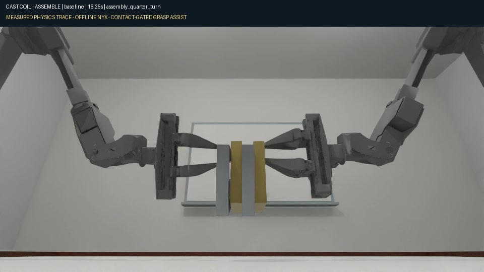
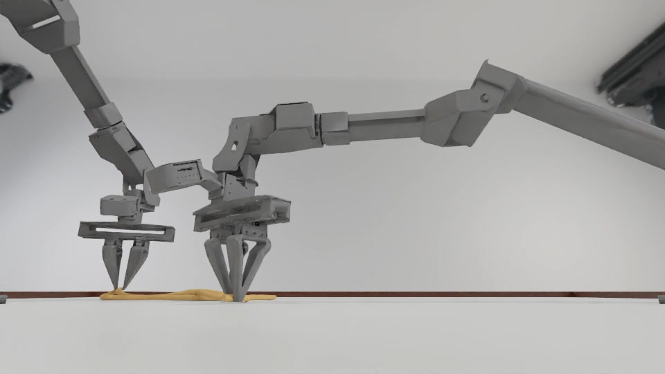
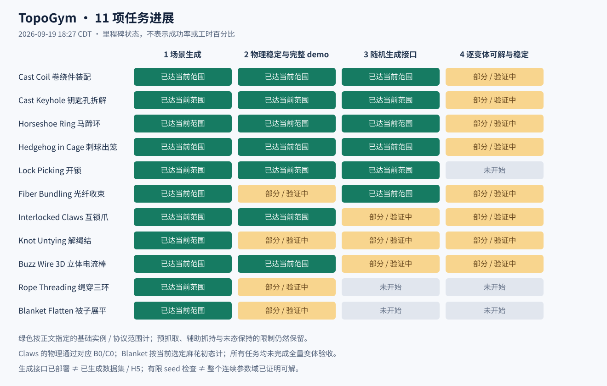

TopoGym.
A benchmark for
complex spatial constraints.
物体之间、物体自身的约束，
如何决定一条可执行的动作路径？
GeometryContactAction sequence

Object ↔ object

Object ↔ self
RESEARCH IN PROGRESSTask space → Demos → Evaluation → Policies
TOPOGYM / RESEARCH IN PROGRESS01 / 35
02 · Task space
从两个维度组织任务
UNDER DEVELOPMENT
用约束机制寻找任务，而后验证可解性与难度。
约束关系 × 物体性质
Rigid / 刚性
Deformable / 可形变
Object ↔ object物体与其他物体
互锁 · 窄通路 · 接触
Coil / Keyhole / Claws
Hedgehog / Lock / Buzz Wire
穿引 · 收束
Rope Threading
Fiber Bundling
Object ↔ self物体与自身
待扩展的任务空间
关节化 / 多部件结构
候选方向
自接触 · 缠结 · 折叠
Knot Untying
Blanket Flatten
Horseshoe Ring 跨越刚性构件与可动链条；这些维度允许交叉。
TOPOGYM / RESEARCH IN PROGRESS02 / 35
先看核心约束与进度，再看完整画面。
指定范围已达到部分 / 验证中未验收
TOPOGYM / RESEARCH IN PROGRESS03 / 35
形变与自接触打开新的任务空间，也带来验证难点。
指定范围已达到部分 / 验证中未验收
↗从“能展示”走向“可评测”完整执行、物理可靠性、随机实例验收，需要分别推进。
TOPOGYM / RESEARCH IN PROGRESS04 / 35
03 · Demos
Cast Coil
完整基础 demo
卷绕件装配 / 预抓取 · 接触辅助 · 装配后释放
0:00 / 0:00
TOPOGYM / RESEARCH IN PROGRESS05 / 35
03 · Demos
Cast Coil · Wrist
完整基础 demo
Left wrist + Right wrist / 左右腕部视角 / 预抓取 · 接触辅助 · 装配后释放
0:00 / 0:00
TOPOGYM / RESEARCH IN PROGRESS06 / 35
03 · Demos
Cast Keyhole
完整拆解
钥匙孔拆解 / 预抓取 · 接触辅助 · 拆解后仍夹持
0:00 / 0:00
TOPOGYM / RESEARCH IN PROGRESS07 / 35
03 · Demos
Cast Keyhole · Wrist
完整拆解
Left wrist + Right wrist / 左右腕部视角 / 预抓取 · 接触辅助 · 拆解后仍夹持
0:00 / 0:00
TOPOGYM / RESEARCH IN PROGRESS08 / 35
03 · Demos
Horseshoe Ring
完整基础 demo
马蹄环 / 辅助抓持 · 取环后落桌 · 基础双步长通过
0:00 / 0:00
TOPOGYM / RESEARCH IN PROGRESS09 / 35
03 · Demos
Horseshoe Ring · Wrist
完整基础 demo
Left wrist + Right wrist / 左右腕部视角 / 辅助抓持 · 取环后落桌 · 基础双步长通过
0:00 / 0:00
TOPOGYM / RESEARCH IN PROGRESS10 / 35
03 · Demos
Hedgehog in Cage
完整原型 demo
刺球出笼 / 固定六刺侧孔 v2 · 预抓取 / 接触辅助 · 取出后释放
0:00 / 0:00
TOPOGYM / RESEARCH IN PROGRESS11 / 35
03 · Demos
Hedgehog in Cage · Wrist
完整原型 demo
Wrist / 腕部视角 / 固定六刺侧孔 v2 · 预抓取 / 接触辅助 · 取出后释放
0:00 / 0:00
TOPOGYM / RESEARCH IN PROGRESS12 / 35
03 · Demos
Lock Picking
基础成功轨迹
开锁 / 150 mm / 两回退 · 实测状态重渲染
0:00 / 0:00
TOPOGYM / RESEARCH IN PROGRESS13 / 35
03 · Demos
Lock Picking · Wrist
基础成功轨迹
Wrist / 腕部视角 / 150 mm / 两回退 · 实测状态重渲染
0:00 / 0:00
TOPOGYM / RESEARCH IN PROGRESS14 / 35
03 · Demos
Interlocked Claws
资格受限
互锁爪 · A0 / A0 全过程 · 理想辅助抓持 · 原非凸接触限制仍在
0:00 / 0:00
TOPOGYM / RESEARCH IN PROGRESS15 / 35
03 · Demos
Interlocked Claws · Wrist
资格受限
Left wrist + Right wrist / 左右腕部视角 / A0 全过程 · 理想辅助抓持 · 原非凸接触限制仍在
0:00 / 0:00
TOPOGYM / RESEARCH IN PROGRESS16 / 35
03 · Demos
Buzz Wire 3D
复验中
立体电流棒 / F3 四关 v3 · 摩擦抓持 · 状态重渲染 · 小步长复验未完
0:00 / 0:00
TOPOGYM / RESEARCH IN PROGRESS17 / 35
03 · Demos
Buzz Wire 3D · Wrist
复验中
Wrist / 腕部视角 / F3 四关 v3 · 摩擦抓持 · 状态重渲染 · 小步长复验未完
0:00 / 0:00
TOPOGYM / RESEARCH IN PROGRESS18 / 35
03 · Demos
Fiber Bundling
验证中
光纤收束 / 8 芯 / R13.5 mm · 辅助抓持 · 线形收敛未通过
0:00 / 0:00
TOPOGYM / RESEARCH IN PROGRESS19 / 35
03 · Demos
Fiber Bundling · Wrist
验证中
Wrist / 腕部视角 / 8 芯 / R13.5 mm · 辅助抓持 · 线形收敛未通过
0:00 / 0:00
TOPOGYM / RESEARCH IN PROGRESS20 / 35
03 · Demos
Knot Untying
验证中
解绳结 / 三叶结 v9 · 接触辅助 · 网格收敛 / 通用交接待验收
0:00 / 0:00
TOPOGYM / RESEARCH IN PROGRESS21 / 35
03 · Demos
Knot Untying · Wrist
验证中
Left wrist + Right wrist / 左右腕部视角 / 三叶结 v9 · 接触辅助 · 网格收敛 / 通用交接待验收
0:00 / 0:00
TOPOGYM / RESEARCH IN PROGRESS22 / 35
03 · Demos
Rope Threading
局部片段
绳穿三环 / 抓取 → 抬升 → 释放 · 尚无三环成功全过程
0:00 / 0:00
TOPOGYM / RESEARCH IN PROGRESS23 / 35
03 · Demos
Rope Threading · Wrist
局部片段
Left wrist + Right wrist / 左右腕部视角 / 抓取 → 抬升 → 释放 · 尚无三环成功全过程
0:00 / 0:00
TOPOGYM / RESEARCH IN PROGRESS24 / 35
03 · Demos
Blanket Flatten
未成功尝试
被子展平 / 复杂麻花初态 v10 · 末态覆盖 45.4% · 尚未展平
0:00 / 0:00
TOPOGYM / RESEARCH IN PROGRESS25 / 35
03 · Demos
Blanket Flatten · Wrist
未成功尝试
Wrist / 腕部视角 / 复杂麻花初态 v10 · 末态覆盖 45.4% · 尚未展平
0:00 / 0:00
TOPOGYM / RESEARCH IN PROGRESS26 / 35
04 · Evaluation
先看已有 pilot，再定义正式评测
EXPLORATORY PILOT
原生累计 input + output；沿用已有用量图与冻结数据。
6个任务
7次运行
0次已观察到成功
6 次 failed · 1 次仍为 ready
冻结于 09.19 / 18:24:55 CDT
7/7 均已超过原 2M 目标；这批结果尚不能回答“3M 下能否完成”。
TOPOGYM / RESEARCH IN PROGRESS27 / 35
04 · Evaluation
3M tokens，能走到哪一档难度？
EVALUATION PROPOSAL
3MGPT-6 Astra · Offline
外部硬计量 · 干净会话 · 同一交互协议
L1基准实例
已验证的完整路径
→L2参数变化
净空 / 姿态 / 形变
→L3结构与序列
回退 / 交接 / 多阶段
Budget sweep 提案0.5M1M2M3M× 固定难度实例
难度档位由统一条件下的表现校准；参数更大或更多，并不自动等于更难。
TOPOGYM / RESEARCH IN PROGRESS28 / 35
04 · Evaluation
以 segment 为单位，闭环交互
INTERFACE PROPOSAL
每次 action segment 后，返回对应的状态轨迹与视频。
01Observe
clip + states
→02Propose
action segment
→03Execute
同一环境连续执行
→04Review
反馈 → 下一段
episode/task.json
initial/ ← 初始观测
segments/
0001/ ← action + trajectory + clip
0002/
index.json ← 路径、时间戳、可读字段
Harness 管理输入与输出
对齐trajectory / state / video 共享时间戳
TOPOGYM / RESEARCH IN PROGRESS30 / 35
04 · Evaluation
固定场景，比较 success rate
METRICS PROPOSAL
固定的是测试场景；保留并报告策略执行的随机性。
随机生成候选→逐实例资格验收→冻结 test seeds→所有 policy 共用
PRIMARY METRICSuccess rate
按 task × difficulty × input track 分层
成功 episode / 预先约定的有效 episode
重复运行 + 95% CI
图上的两种参照
Random policy bar
相同动作约束与步数预算的随机策略基线
├──┤Error bar
固定实例与策略重复的统计不确定性
场景生成时随机，生成并验收后冻结；另报超预算、违规终止与基础设施错误。
TOPOGYM / RESEARCH IN PROGRESS31 / 35
05 · Policies
三类 policy，同一个 harness
固定评测接口，更换求解策略。
01优先 baselineCode agents
观察 → 写代码 → 执行 → 修订
02探索方向VLA / + Code
动作片段提议 → 轨迹与视频反馈
03规划中Pure RL
交互学习 → 闭环执行
Shared harnessTask adapterObservation / actionEvaluatorLogging / budget
TOPOGYM / RESEARCH IN PROGRESS32 / 35
05 · Policies
VLA 提议动作，GPT 继续修订
SPECULATIVE / 待验证
VLA 作为动作提议器，帮助启动与推进求解。
PROPOSALVLA
roll out 一个 segment
→同一 segment
trajectory+rendered clip
→REVISIONGPT / Code agent
解释偏差 · 修订后续动作
观察新反馈←继续执行 revised segment←基于当前真实状态
?VLA 能否降低从零规划的成本？先验证单任务接口；跨机器人适配与动作可靠性仍是主要不确定性。
TOPOGYM / RESEARCH IN PROGRESS33 / 35
06 · Next decisions
下一步：收敛任务与评测边界
OPEN FOR DISCUSSION
先冻结小规模、可解释的 benchmark，再扩任务与 policy。
01 / TASKS哪些 task 留下？
机制有代表性
同协议下有完整可解见证
物理与失败判据可靠
02 / DIFFICULTY哪些实例进入 3M 测试？
从已验收基准开始
固定 seeds 与参数阶梯
实测校准难度
03 / HARNESS先把什么接通？
segment 视频 / 状态索引
A / B 信息权限
硬预算与统一统计
Complex constraints. Clear tasks. Measurable progress.
TOPOGYM / RESEARCH IN PROGRESS34 / 35
07 · Appendix
原始四阶段进度图
SOURCE FIGURE
原图保留；任务清单页已按相同数据重排。

TOPOGYM / RESEARCH IN PROGRESS35 / 35